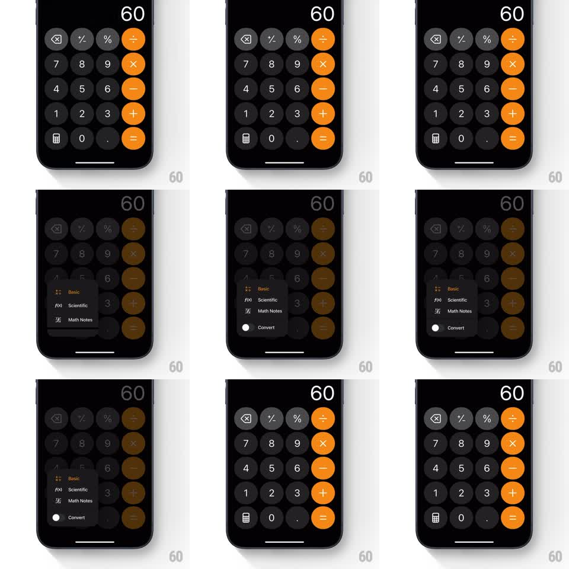

Media
Frame-by-frame

Rebuild this interaction 1:1: Apple Calculator's mode menu - tapping the calculator icon at the bottom-left dims the keypad and springs a dark floating menu up from the icon, listing Basic, Scientific, Math Notes, and Convert.

Rebuild this interaction 1:1: Apple Calculator's mode menu - tapping the calculator icon at the bottom-left dims the keypad and springs a dark floating menu up from the icon, listing Basic, Scientific, Math Notes, and Convert. ## Integration Integration: stack-agnostic spec - springs given as stiffness/damping, timed motions as duration + curve; map every value to your framework and animation library of choice. ## Scene The iOS Calculator: black background, the big result readout top-right, and the standard keypad grid - grey function keys, dark digit keys, orange operators. At the bottom-left corner sits the small calculator-modes icon. Tapping it dims and slightly tints the keypad behind while a dark rounded menu grows out of the icon: rows for "Basic" (checked), "Scientific", "Math Notes", and "Convert", each with its glyph. ## Motion spec Pattern: anchored springy menu, ~500ms open. - On tap, the keypad keys dim to about half brightness (200ms) and the result readout fades slightly. - The menu scales up from the icon's position (scale 0.2 to 1, spring stiffness 380 damping 26), its anchor corner pinned at the icon so it grows diagonally into the keypad's space. - Menu rows fade in with a slight top-down stagger (30ms apart, 150ms each); the checkmark sits beside "Basic". - Dismissal reverses it: the menu scales back into the icon (spring stiffness 400 damping 30) as the keypad restores full brightness. ## Calibration - The menu is dark translucent material, not opaque black - the dimmed keypad shows faintly behind it. - The anchor point never moves; the menu always grows from the icon. ## Reduced motion Menu fades in centered over the keypad. ## Don't miss - The keypad dims but stays put - no layout shift. - "Convert" carries a small trailing toggle glyph, distinct from the three mode rows.